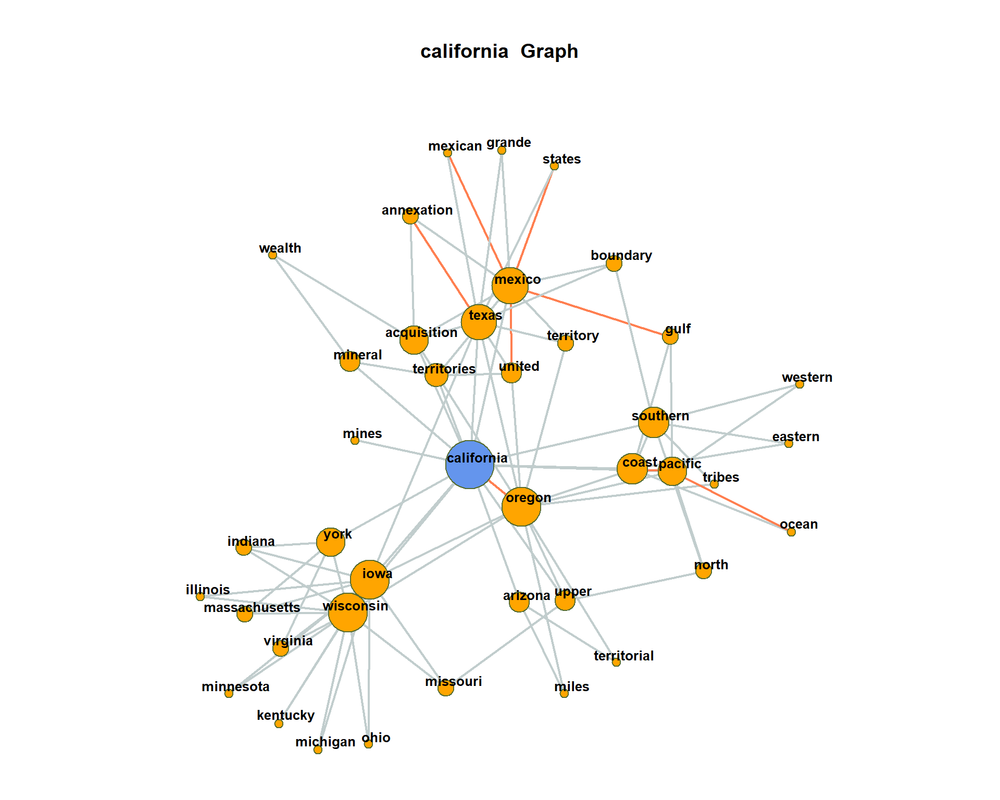
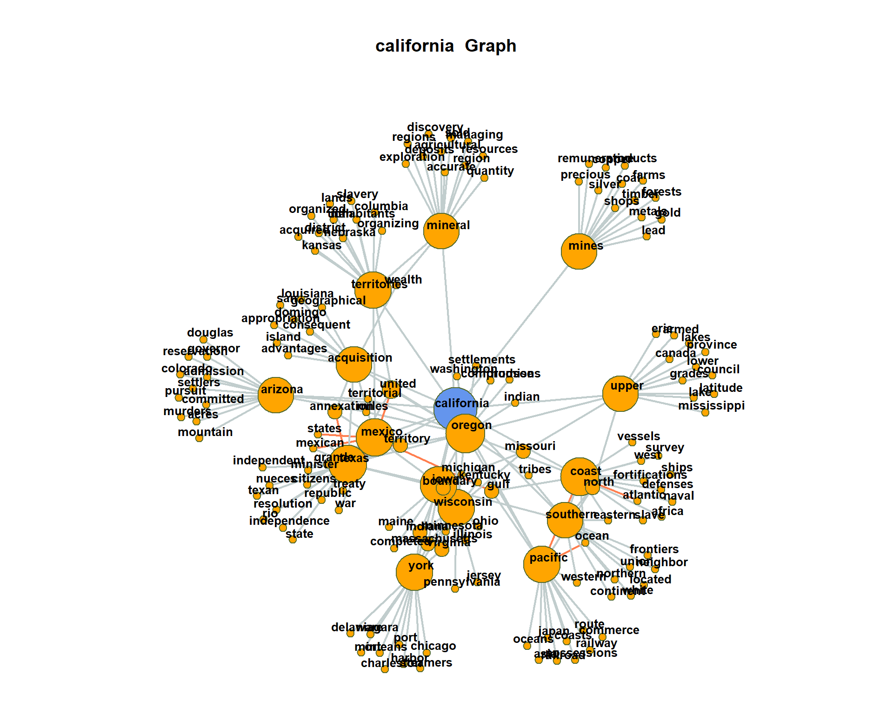
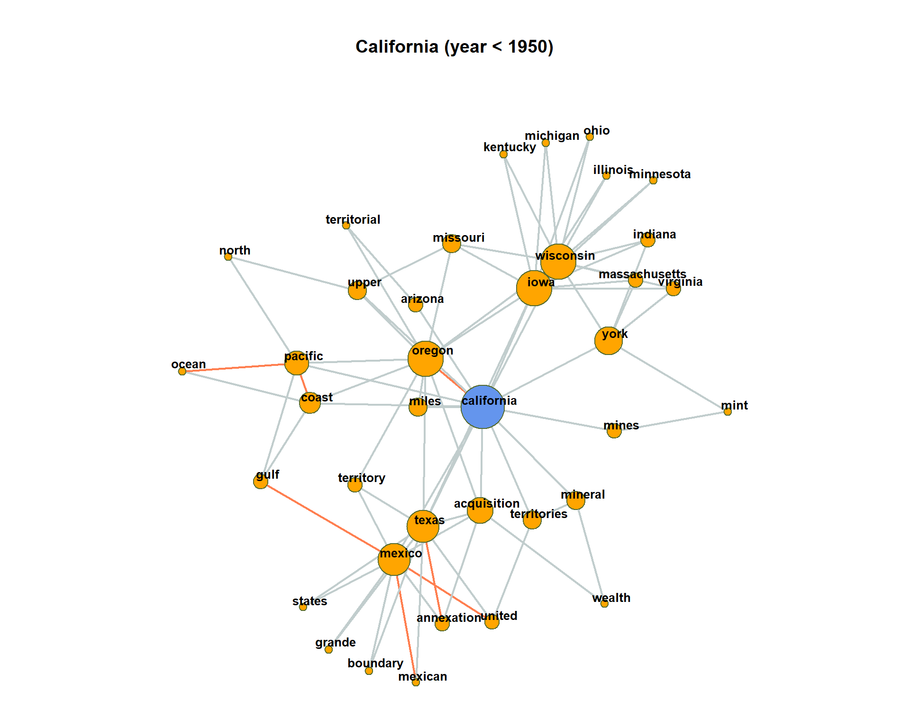

Advanced Network Analysis
Martin Schweinberger
2020-04-11

1 Introduction
This tutorial introduces collocation and co-occurrence analysis with “R”. It is shown how different significance measures can be used to extract semantic links between words and how such links can be displayed. The entire code for the sections below can be downloaded here.
2 Preparation and session set up
As all caluculations and visualizations in this tutorial rely on “R”, it is necessary to install “R” and “RStudio”. If these programms (or, in the case of “R”, environments) are not already installed on your machine, please search for them in your favorite search engine and add the term “download”. Open any of the first few links and follow the installation instructions (they are easy to follow, do not require any specifications, and are pretty much self-explanatory).
In addition, certain “libraries” or “packages” need to be installed so that the scripts shown below are executed without errors. Before turning to the code below, please install the librariesby running the code below this paragraph. If you have already installed the libraries mentioned below, then you can skip ahead ignore this section. To install the necessary libraries, simply run the following code - it may take some time (between 1 and 5 minutes to install all of the libraries so you do not need to worry if it takes some time).
# clean current workspace
rm(list=ls(all=T))
# set options
options(stringsAsFactors = F) # no automatic data transformation
options("scipen" = 100, "digits" = 4) # supress math annotation
# install libraries
install.packages(c("collostructions"))Once you have installed “R” and “R-Studio”, and have also initiated the session by executing the code shown above, you are good to go.
3 Lodaing and modifying data
We start the analysis by loading the tm package and the data as well as a list of stopwords (words that do not have semantic emaning).
# load library
library(tm)
# load data
textdata <- read.csv("https://slcladal.github.io/data/sotu.csv", sep = ";", encoding = "UTF-8")
# load stopwords
english_stopwords <- readLines("https://slcladal.github.io/resources/stopwords_en.txt", encoding = "UTF-8")
# create corpus object
corpus <- Corpus(DataframeSource(textdata))4 Sentence detection
The separation of the text into semantic analysis units is important for co-occurrence analysis. Context windows can be for instance documents, paragraphs or sentences or neighboring words. One of the most frequently used context window is the sentence.
Documents are decomposed into sentences. Sentences are defined as a separate (quasi-)documents in a new corpus object of the tm-package. The further application of the tm-package functions remains the same. In contrast to previous exercises, however, we now use sentences which are stored as individual documents in the body.
Important: The sentence segmentation must take place before the other preprocessing steps because the sentence-segmentation-model relies on intact word forms and punctuation marks.
The following code defines two functions. One selects documents, the other decomposes a given document text into sentences with the help of a probabilistic model.
require(openNLP)
# Function to convert a document in a vector of sentences
convert_text_to_sentences <- function(text, lang = "en", SentModel = "resources/en-sent.bin") {
# Calculate sentenve boundaries as annotation with Apache OpenNLP Maxent-sentence-detector.
sentence_token_annotator <- Maxent_Sent_Token_Annotator(language = lang, model = SentModel)
# Convert text to NLP string
text <- NLP::as.String(text)
# Annotate the sentence boundaries
sentenceBoundaries <- NLP::annotate(text, sentence_token_annotator)
# Select sentences as rows of a new matrix
sentences <- text[sentenceBoundaries]
# return the sentences
return(sentences)
}# Function to convert a corpus of documents into a corpus of single sentences from documents
reshape_corpus <- function(currentCorpus, ...) {
# Extraction of all sentences from the corpus as a list
text <- lapply(currentCorpus, as.character)
# convert the text
pb <- txtProgressBar(min=0, max=length(text))
i <- 0
docs <- lapply(text, FUN=function(x){
i <<- i + 1
setTxtProgressBar(pb, i)
convert_text_to_sentences(x)
}, ...)
close(pb)
docs <- as.vector(unlist(docs))
# Create a new corpus of the segmented sentences
newCorpus <- Corpus(VectorSource(docs))
return(newCorpus)
}We apply the function reshape_corpus on our corpus of full speeches to receive a corpus of sentences.
# original corpus length and its first document
length(corpus)## [1] 185substr(as.character(corpus[[1]]), 0, 200)## [1] "Fellow-Citizens of the Senate and House of Representatives:\n\nI embrace with great satisfaction the opportunity which now presents itself\nof congratulating you on the present favorable prospects of our"# reshape into sentences
sentenceCorpus <- reshape_corpus(corpus)## ================================================================================# reshaped corpus length and its first 'document'
length(sentenceCorpus)## [1] 48395as.character(sentenceCorpus[[1]])## [1] "Fellow-Citizens of the Senate and House of Representatives:\n\nI embrace with great satisfaction the opportunity which now presents itself\nof congratulating you on the present favorable prospects of our public\naffairs."as.character(sentenceCorpus[[2]])## [1] "The recent accession of the important state of North Carolina to\nthe Constitution of the United States (of which official information has\nbeen received), the rising credit and respectability of our country, the\ngeneral and increasing good will toward the government of the Union, and\nthe concord, peace, and plenty with which we are blessed are circumstances\nauspicious in an eminent degree to our national prosperity."CAUTION: The newly decomposed corpus has now reached a considerable size of 48395 sentences. Older computers may get in trouble because of insufficient memory during this preprocessing step.
Now we are returning to our usual pre-processing chain and apply it on the separated sentences.
# Preprocessing chain
sentenceCorpus <- tm_map(sentenceCorpus, content_transformer(tolower))
sentenceCorpus <- tm_map(sentenceCorpus, removeWords, english_stopwords)
sentenceCorpus <- tm_map(sentenceCorpus, removePunctuation, preserve_intra_word_dashes = TRUE)
sentenceCorpus <- tm_map(sentenceCorpus, removeNumbers)
sentenceCorpus <- tm_map(sentenceCorpus, stripWhitespace)Again, we create a document-term-matrix. Only word forms which occur at least 10 times should be taken into account. An upper limit is not set (Inf = infinite).
Additionally, we are interested in the joint occurrence of words in a sentence. For this, we do not need the exact count of how often the terms occur, but only the information whether they occur together or not. This can be encoded in a binary document-term-matrix. The parameter weighting in the control options calls the weightBin function. This writes a 1 into the DTM if the term is contained in a sentence and 0 if not.
minimumFrequency <- 10
binDTM <- DocumentTermMatrix(sentenceCorpus, control=list(bounds = list(global=c(minimumFrequency, Inf)), weighting = weightBin))5 Counting co-occurrences
The counting of the joint word occurrence is easily possible via a matrix multiplication (https://en.wikipedia.org/wiki/Matrix_multiplication) on the binary DTM. For this purpose, the transposed matrix (dimensions: nTypes x nDocs) is multiplied by the original matrix (nDocs x nTypes), which as a result encodes a term-term matrix (dimensions: nTypes x nTypes).
However, since we are working on very large matrices and the sparse matrix format (slam) which is used by the tm-package does not fully support the matrix multiplication, we first have to convert the binDTM into the format of the Matrix package which is more convenient to use.
# Convert to sparseMatrix matrix
require(Matrix)
binDTM <- sparseMatrix(i = binDTM$i, j = binDTM$j, x = binDTM$v, dims = c(binDTM$nrow, binDTM$ncol), dimnames = dimnames(binDTM))
# Matrix multiplication for cooccurrence counts
coocCounts <- t(binDTM) %*% binDTMLet’s look at a snippet of the result. The matrix has nTerms rows and columns and is symmetric. Each cell contains the number of joint occurrences. In the diagonal, the frequencies of single occurrences of each term are encoded.
as.matrix(coocCounts[202:205, 202:205])## inventions manufactures post-office producing
## inventions 17 1 1 1
## manufactures 1 159 1 3
## post-office 1 1 121 1
## producing 1 3 1 75Interprete as follows: post-office appears together 1 times with producing in the 48395 sentences of the SUTO addresses. post-office alone occurs 121 times.
6 Statistical significance
In order to not only count joint occurrence we have to determine their significance. Different significance-measures can be used. We need also various counts to calculate the significance of the joint occurrence of a term i (coocTerm) with any other term j: * k - Number of all context units in the corpus * ki - Number of occurrences of coocTerm * kj - Number of occurrences of comparison term j * kij - Number of joint occurrences of coocTerm and j
These quantities can be calculated for any term coocTerm as follows:
coocTerm <- "spain"
k <- nrow(binDTM)
ki <- sum(binDTM[, coocTerm])
kj <- colSums(binDTM)
names(kj) <- colnames(binDTM)
kij <- coocCounts[coocTerm, ]An implementation in R for Mutual Information, Dice, and Log-Likelihood may look like this. At the end of each formula, the result is sorted so that the most significant co-occurrences are at the first ranks of the list.
########## MI: log(k*kij / (ki * kj) ########
mutualInformationSig <- log(k * kij / (ki * kj))
mutualInformationSig <- mutualInformationSig[order(mutualInformationSig, decreasing = TRUE)]
########## DICE: 2 X&Y / X + Y ##############
dicesig <- 2 * kij / (ki + kj)
dicesig <- dicesig[order(dicesig, decreasing=TRUE)]
########## Log Likelihood ###################
logsig <- 2 * ((k * log(k)) - (ki * log(ki)) - (kj * log(kj)) + (kij * log(kij))
+ (k - ki - kj + kij) * log(k - ki - kj + kij)
+ (ki - kij) * log(ki - kij) + (kj - kij) * log(kj - kij)
- (k - ki) * log(k - ki) - (k - kj) * log(k - kj))
logsig <- logsig[order(logsig, decreasing=T)]The result of the four variants for the statistical extraction of co-occurrence terms is shown in a data frame below. It can be seen that frequency is a bad indicator of meaning constitution. Mutual information emphasizes rather rare events in the data. Dice and Log-likelihood yield very well interpretable contexts.
# Put all significance statistics in one Data-Frame
resultOverView <- data.frame(
names(sort(kij, decreasing=T)[1:10]), sort(kij, decreasing=T)[1:10],
names(mutualInformationSig[1:10]), mutualInformationSig[1:10],
names(dicesig[1:10]), dicesig[1:10],
names(logsig[1:10]), logsig[1:10],
row.names = NULL)
colnames(resultOverView) <- c("Freq-terms", "Freq", "MI-terms", "MI", "Dice-Terms", "Dice", "LL-Terms", "LL")
print(resultOverView)## Freq-terms Freq MI-terms MI Dice-Terms Dice LL-Terms LL
## 1 spain 441 spain 4.698107 spain 1.00000000 cuba 228.29098
## 2 states 146 amistad 3.781816 cuba 0.14344828 united 188.69371
## 3 united 137 antilles 3.781816 spanish 0.11836115 spanish 168.17257
## 4 government 113 madrid 3.702679 france 0.08439898 states 156.12224
## 5 treaty 55 catholic 3.633396 island 0.07525326 treaty 102.47927
## 6 cuba 52 autonomy 3.599495 treaty 0.07051282 france 100.98867
## 7 war 46 cubans 3.519452 madrid 0.06981520 madrid 100.30171
## 8 made 46 subdue 3.474331 colonies 0.06273063 island 82.82888
## 9 part 44 parent 3.311813 friendly 0.06221198 florida 72.85754
## 10 relations 40 disavowed 3.231770 florida 0.06165703 colonies 70.325907 Visualization of co-occurrence
In the following, we create a network visualization of significant co-occurrences.
For this, we provide the calculation of the co-occurrence significance measures, which we have just introduced, as single function in the file calculateCoocStatistics.R. This function can be imported into the current R-Session with the source command.
# Read in the source code for the co-occurrence calculation
source("https://slcladal.github.io/rscripts/calculateCoocStatistics.R")
# Definition of a parameter for the representation of the co-occurrences of a concept
numberOfCoocs <- 15
# Determination of the term of which co-competitors are to be measured.
coocTerm <- "california"We use the imported function calculateCoocStatistics to calculate the co-occurrences for the target term “california”.
coocs <- calculateCoocStatistics(coocTerm, binDTM, measure="LOGLIK")
# Display the numberOfCoocs main terms
print(coocs[1:numberOfCoocs])## oregon mexico coast upper mineral texas
## 256.19605 108.99118 55.74493 52.20715 51.84092 49.69795
## acquisition pacific territories arizona wisconsin mines
## 42.19477 38.83697 37.32584 33.86477 33.28575 32.65959
## iowa york southern
## 30.97007 30.22620 28.57351To acquire an extended semantic environment of the target term, ‘secondary co-occurrence’ terms can be computed for each co-occurrence term of the target term. This results in a graph that can be visualized with special layout algorithms (e.g. Force Directed Graph).
Network graphs can be evaluated and visualized in R with the igraph-package. Any graph object can be created from a three-column data-frame. Each row in that data-frame is a triple. Each triple encodes an edge-information of two nodes (source, sink) and an edge-weight value.
For a term co-occurrence network, each triple consists of the target word, a co-occurring word and the significance of their joint occurrence. We denote the values with from, to, sig.
resultGraph <- data.frame(from = character(), to = character(), sig = numeric(0))The process of gathering the network for the target term runs in two steps. First, we obtain all significant co-occurrence terms for the target term. Second, we obtain all co-occurrences of the co-occurrence terms from step one.
Intermediate results for each term are stored as temporary triples named tmpGraph. With the rbind command (“row bind”, used for concatenation of data-frames) all tmpGraph are appended to the complete network object stored in resultGraph.
# The structure of the temporary graph object is equal to that of the resultGraph
tmpGraph <- data.frame(from = character(), to = character(), sig = numeric(0))
# Fill the data.frame to produce the correct number of lines
tmpGraph[1:numberOfCoocs, 3] <- coocs[1:numberOfCoocs]
# Entry of the search word into the first column in all lines
tmpGraph[, 1] <- coocTerm
# Entry of the co-occurrences into the second column of the respective line
tmpGraph[, 2] <- names(coocs)[1:numberOfCoocs]
# Set the significances
tmpGraph[, 3] <- coocs[1:numberOfCoocs]
# Attach the triples to resultGraph
resultGraph <- rbind(resultGraph, tmpGraph)
# Iteration over the most significant numberOfCoocs co-occurrences of the search term
for (i in 1:numberOfCoocs){
# Calling up the co-occurrence calculation for term i from the search words co-occurrences
newCoocTerm <- names(coocs)[i]
coocs2 <- calculateCoocStatistics(newCoocTerm, binDTM, measure="LOGLIK")
#print the co-occurrences
coocs2[1:10]
# Structure of the temporary graph object
tmpGraph <- data.frame(from = character(), to = character(), sig = numeric(0))
tmpGraph[1:numberOfCoocs, 3] <- coocs2[1:numberOfCoocs]
tmpGraph[, 1] <- newCoocTerm
tmpGraph[, 2] <- names(coocs2)[1:numberOfCoocs]
tmpGraph[, 3] <- coocs2[1:numberOfCoocs]
#Append the result to the result graph
resultGraph <- rbind(resultGraph, tmpGraph[2:length(tmpGraph[, 1]), ])
}As a result, resultGraph now contains all numberOfCoocs * numberOfCoocs edges of a term co-occurrence network.
# Sample of some examples from resultGraph
resultGraph[sample(nrow(resultGraph), 6), ]## from to sig
## 73 coast west 80.79596
## 36 texas territory 135.24172
## 56 texas states 113.63179
## 148 pacific western 60.20041
## 51 oregon indian 43.19001
## 116 texas state 68.15746The package iGraph offers multiple graph visualizations for graph objects. Graph objects can be created from triple lists, such as those we just generated. In the next step we load the package iGraph and create a visualization of all nodes and edges from the object resultGraph.
require(igraph)
# Set the graph and type. In this case, "F" means "Force Directed"
graphNetwork <- graph.data.frame(resultGraph, directed = F)
# Identification of all nodes with less than 2 edges
graphVs <- V(graphNetwork)[degree(graphNetwork) < 2]
# These edges are removed from the graph
graphNetwork <- delete.vertices(graphNetwork, graphVs)
# Assign colors to edges and nodes (searchterm blue, rest orange)
V(graphNetwork)$color <- ifelse(V(graphNetwork)$name == coocTerm, 'cornflowerblue', 'orange')
# Edges with a significance of at least 50% of the maximum sig- nificance in the graph are drawn in orange
halfMaxSig <- max(E(graphNetwork)$sig) * 0.5
E(graphNetwork)$color <- ifelse(E(graphNetwork)$sig > halfMaxSig, "coral", "azure3")
# Disable edges with radius
E(graphNetwork)$curved <- 0
# Size the nodes by their degree of networking
V(graphNetwork)$size <- log(degree(graphNetwork)) * 5
# All nodes must be assigned a standard minimum-size
V(graphNetwork)$size[V(graphNetwork)$size < 5] <- 3
# edge thickness
E(graphNetwork)$width <- 2
# Define the frame and spacing for the plot
par(mai=c(0,0,1,0))
# Finaler Plot
plot(graphNetwork,
layout = layout.fruchterman.reingold, # Force Directed Layout
main = paste(coocTerm, ' Graph'),
vertex.label.family = "sans",
vertex.label.cex = 0.8,
vertex.shape = "circle",
vertex.label.dist = 0.5, # Labels of the nodes moved slightly
vertex.frame.color = 'darkolivegreen',
vertex.label.color = 'black', # Color of node names
vertex.label.font = 2, # Font of node names
vertex.label = V(graphNetwork)$name, # node names
vertex.label.cex = 1 # font size of node names
)
8 Optional exercises
Create term networks for “civil”, “germany”, “tax”
For visualization, at one point we filter for all nodes with less than 2 edges. By this, the network plot gets less dense, but we loose also a lot of co-occurring terms connected only to one term. Re-draw the network without this filtering.  The plot may get very messy. Try lower values for
numberOfCoocsto create a less dense network plot.Separate the DTM into two time periods (year < 1950; year > = 1950). Represent the graphs for the term “california” for both time periods. Hint: Define functions for the sub processes of creating a binary DTM from a corpus object (
get_binDTM <- function(mycorpus)) and for visualizing a co-occurrence network (vis_cooc_network <- function(binDTM, coocTerm)).
## ================================================================================## ================================================================================